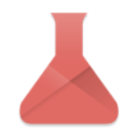
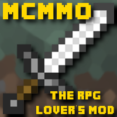

EssentialsX
EssentialsX is a massive plugin that adds much more depth to the default minecraft experience. Some funcitonality includes: The ability to set a home which can be accessed at any time, a functinal economy, unique titles and permissions, etc... For an extensive explanation of functionality, click here

Action Health
Action health is a simple plugin that adds functional health bars for mobs. or an extensive explanation of functionality, click here
mcMMO
mcMMO is a fully realized plugin that integrates common aspects from many MMOs! There is a plethora of new additions that help create a true RPG experience. For an extensive explanation of functionality, click here

IP: 51.79.76.104:40461